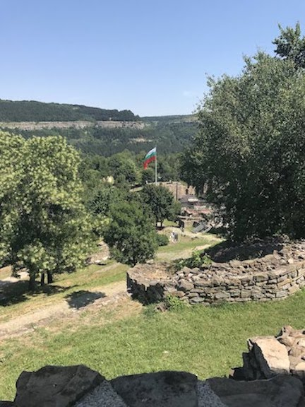

Tsareverts Castle
Tsareverts Castle was a fortress that housed Bulgaria's royalty from the 10th - 14th centries. Located on a hill, the bridge and wall provided the perfect stronghold to deter enemies from invading or trying to overthrow the monarchy. Today, you can still visit the fortress, climb to the top, and tour the keep. Inside the keep, there are many old paintings from the time period that the fortress was in use.
Fortress Entrence
The Fortress had a long bridge that you had to cross in order to get to the path leading up to the top. While there was no draw bridge, this bridge would be incredibly difficult to cross while invading.
Fortress Wall
While we often imagine castles and fortresses having a huge wall around it, in the past people used hills and mountains to supplement wall size. This castle was built on a hill and was already difficult to attack and so adding walls ensured that the royals of ancient Bulgaria were protected.
Photo from the top of the fortress

At the top of the fortress was the main keep. Looking out you could see the modern city that has been built in the time since the fortress was in use.